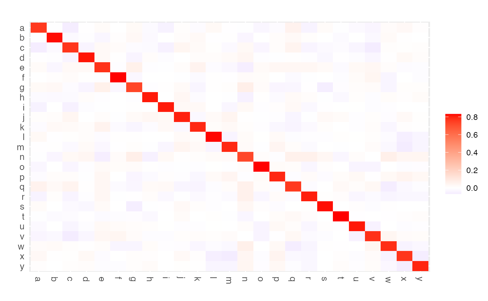

Function that calculates various Ridge estimators for high-dimensional precision matrices.
ridgeP(S, lambda, type = "Alt", target = default.target(S))
| S | Sample covariance |
|---|---|
| lambda | A |
| type | A |
| target | A target |
Function returns a regularized precision matrix.
The function can calculate various ridge estimators for high-dimensional precision matrices. Current (well-known) ridge estimators can be roughly divided in two archetypes. The first archetypal form employs a convex combination of \(\mathbf{S}\) and a positive definite (p.d.) target matrix \(\mathbf{T}\): \(\hat{\mathbf{\Omega}}^{\mathrm{I}}(\lambda_{\mathrm{I}}) = [(1-\lambda_{\mathrm{I}}) \mathbf{S} + \lambda_{\mathrm{I}}\mathbf{T}]^{-1}\), with \(\lambda_{\mathrm{I}} \in (0,1]\). A common target choice is for \(\mathbf{T}\) to be diagonal with \((\mathbf{T})_{jj} = (\mathbf{S})_{jj}\) for \(j=1, \ldots, p\). The second archetypal form can be given as \(\hat{\mathbf{\Omega}}^{\mathrm{II}}(\lambda_{\mathrm{II}}) = (\mathbf{S} + \lambda_{\mathrm{II}} \mathbf{I}_{p})^{-1}\) with \(\lambda_{\mathrm{II}} \in (0, \infty)\). Viewed from a penalized estimation perspective, the two archetypes utilize penalties that do not coincide with the matrix-analogue of the common ridge penalty. van Wieringen and Peeters (2015) derive analytic expressions for alternative Type I and Type II ridge precision estimators based on a proper L2-penalty. Their alternative Type I estimator (target shrinkage) takes the form $$ \hat{\mathbf{\Omega}}^{\mathrm{I}a}(\lambda_{a}) = \left\{ \left[\lambda_{a}\mathbf{I}_{p} + \frac{1}{4}(\mathbf{S} - \lambda_{a}\mathbf{T})^{2}\right]^{1/2} + \frac{1}{2}(\mathbf{S} - \lambda_{a}\mathbf{T}) \right\}^{-1}, $$ while their alternative Type II estimator can be given as a special case of the former: $$ \hat{\mathbf{\Omega}}^{\mathrm{II}a}(\lambda_{a}) = \left\{ \left[\lambda_{a}\mathbf{I}_{p} + \frac{1}{4}\mathbf{S}^{2}\right]^{1/2} + \frac{1}{2}\mathbf{S} \right\}^{-1}. $$ These alternative estimators were shown to be superior to the archetypes in terms of risk under various loss functions (van Wieringen and Peeters, 2015).
The lambda parameter in ridgeP generically indicates the
penalty parameter. It must be chosen in accordance with the type of ridge
estimator employed. The domains for the penalty parameter in the archetypal
estimators are given above. The domain for lambda in the alternative
estimators is \((0, \infty)\). The type parameter specifies the type
of ridge estimator. Specifying type = "ArchI" leads to usage of the
archetypal I estimator while specifying type = "ArchII" leads to usage
of the archetypal II estimator. In the latter situation the argument
target remains unused. Specifying type = "Alt" enables usage of
the alternative ridge estimators: when type = "Alt" and the
target matrix is p.d. one obtains the alternative Type I estimator;
when type = "Alt" and the target matrix is specified to be the
null-matrix one obtains the alternative Type II estimator.
The Type I estimators thus employ target shrinkage. The default target for
both the archetype and alternative is default.target(S). When
target is not the null-matrix it is expected to be p.d. for the
alternative type I estimator. The target is always expected to be p.d. in
case of the archetypal I estimator. The archetypal Type I ridge estimator is
rotation equivariant when the target is of the form \(\mu\mathbf{I}_{p}\)
with \(\mu \in (0,\infty)\). The archetypal Type II estimator is rotation
equivariant by definition. When the target is of the form
\(\varphi\mathbf{I}_{p}\) with \(\varphi \in [0,\infty)\), then the
alternative ridge estimator is rotation equivariant. Its analytic computation
is then particularly speedy as the (relatively) expensive matrix square root
can then be circumvented.
van Wieringen, W.N. & Peeters, C.F.W. (2016). Ridge Estimation of Inverse Covariance Matrices from High-Dimensional Data, Computational Statistics & Data Analysis, vol. 103: 284-303. Also available as arXiv:1403.0904v3 [stat.ME].
van Wieringen, W.N. & Peeters, C.F.W. (2015). Application of a New Ridge Estimator of the Inverse Covariance Matrix to the Reconstruction of Gene-Gene Interaction Networks. In: di Serio, C., Lio, P., Nonis, A., and Tagliaferri, R. (Eds.) `Computational Intelligence Methods for Bioinformatics and Biostatistics'. Lecture Notes in Computer Science, vol. 8623. Springer, pp. 170-179.
Carel F.W. Peeters <carel.peeters@wur.nl>, Anders E. Bilgrau
set.seed(333) ## Obtain some (high-dimensional) data p <- 25 n <- 10 X <- matrix(rnorm(n*p), nrow = n, ncol = p) colnames(X)[1:p] = letters[1:p] Cx <- covML(X) ## Obtain regularized precision matrix P <- ridgeP(Cx, lambda = 10, type = "Alt") summary(P)#> A 25 x 25 ridge precision matrix estimate with lambda = 10.000000#> A 25 x 25 ridge precision matrix estimate with lambda = 10.000000 #> a b c d e … #> a 0.7586005611 -0.003388106 -0.06230663 -0.002600351 0.017829395 … #> b -0.0033881061 0.824243512 -0.02012367 -0.008647220 -0.031021296 … #> c -0.0623066280 -0.020123673 0.76471884 -0.038737601 0.026085391 … #> d -0.0026003511 -0.008647220 -0.03873760 0.817518072 0.025132790 … #> e 0.0178293946 -0.031021296 0.02608539 0.025132790 0.774812407 … #> f 0.0008224896 0.007036266 0.01612838 0.002211579 -0.007716194 … #> f … #> a 0.0008224896 … #> b 0.0070362659 … #> c 0.0161283801 … #> d 0.0022115795 … #> e -0.0077161936 … #> f 0.8303406862 … #> … 19 more rows and 19 more columns#> Warning: 'as.is' should be specified by the caller; using TRUE#> Warning: 'as.is' should be specified by the caller; using TRUE